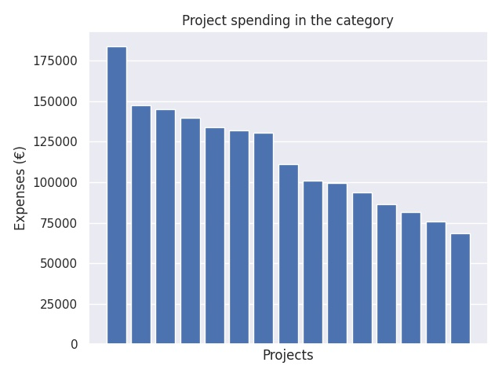

Ammatillisen koulutuksen laadun kehittäminen
Category summary
115K spent on average
184K highest spending

Reports in the category
Keski-Uudenmaan koulutuskuntayhtymä
Project name: LARK 6 - Laatua ammatillisen koulutukseen arkeen, latua reformille
184K spent
Oulun seudun koulutuskuntayhtymä
Project name: Laatusampo 4
147K spent
Länsirannikon koulutus Oy WinNova
Project name: Hyvin tekemistä länteen 2017
145K spent
Helsingin Diakonissalaitos / Helsingin Diakoniaopisto
Project name: Yhdessä eteenpäin 5 - laatustrategian toimeenpanon tuki 2017
140K spent
Jyväskylän koulutuskuntayhtymä
Project name: Samassa veneessä 4 - Asiakkaat airoihin
134K spent
Suomen Urheiluopiston Kannatusosakeyhtiö
Project name: Laadunhallinnan toimeenpano urheiluopistojen arkeen LATUA!3 - hanke
132K spent
Turun konservatorion kannatusyhdistys ry.
Project name: Konservatorioiden kehittyvä vertaisarviointi
131K spent
Pohjois-Karjalan koulutuskuntayhtymä
Project name: LOISTE IV
111K spent
Etelä-Karjalan koulutuskuntayhtymä, Saimaan ammattiopisto Sampo
Project name: VETO-REF, Laatua koulutusprosessien tuloksellisuuteen ja vaikuttavuuteen reformin hengessä
101K spent
Sastamalan koulutuskuntayhtymä
Project name: LEANilla tulosta
99.6K spent
Tampereen Aikuiskoulutussäätiö sr/Tampereen Aikuiskoulutuskeskus
Project name: Hukka pois
93.5K spent
Svenska Österbottens förbund för utbildning o kultur/Yrkesakademin i Österbotten
Project name: Botnia Quality 2.0
86.2K spent
Kiinteistöalan Koulutussäätiö sr
Project name: ELO -VAPA: Elinkeinoelämän oppilaitosten koulutusten vaikuttavuuden parantaminen työelämässä
81.5K spent
Hengitysliitto ry / Ammattiopisto Luovi
Project name: Tietoa kaikille!
75.9K spent
Kalajoen Kristillinen Opisto
Project name: Laadulla reformiin!
68.5K spent